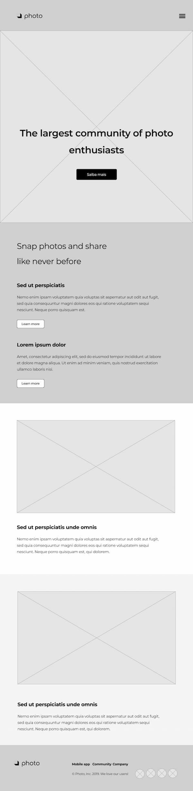
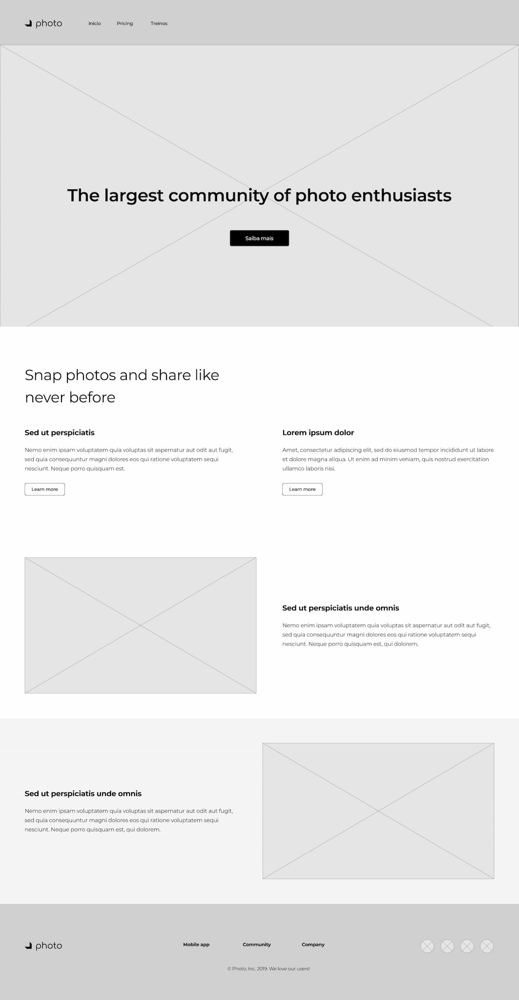

-
Nome do Site:
masterlifegyn.com - Mates Life - GYN este nome representa, fazer atividades para manter a saude e a beleza. Escolhi esse tema porque gosto de treinar e passei em frente a uma academia a tive a ideia.
Logo:
-
Finalidade do Site:
Este site fornecera, planos e pacotes de treinos promocionais, alem de fornecer recomenadações de trinos para as atividades de musculaçlão, funcional e cardio.
- Cenários: Para master life Gyn. Qaal o seu objetivo, Quais ativadeve deve fazer, tudo isso pensamos juntos com você.
-
Esquema de Cores:
Paleta de Cores - Site de Academia Seção Cor Header #121212 Main #1E1E1E Cards #2A2A2A Botões #FF6B00 Footer #0F2D3A Texto Principal #F5F5F5 -
Tipografia:
Aplicação das Fontes Área Fonte Logo Poppins Header Poppins Menu de Navegação Poppins Título Principal (H1) Poppins Subtítulos (H2) Poppins Títulos dos Cards (H3) Poppins Botões Poppins Texto Principal Inter Descrição dos Cards Inter Informações dos Planos Inter Footer Inter -
Wireframe:
Mobile

Desktop
